Methodology
모든 장표를 하나의 논리로 잇는 문제해결 가이드
컨설팅에서 쓰는 산출물 양식과 작성법을 116쪽 분량의 가이드로 정리했습니다. 기업 교육과 DSA 팀 프로젝트에서도 같은 가이드로 진행하기 때문에, 교육이 끝나면 바로 현업 프로젝트에 적용할 수 있습니다.
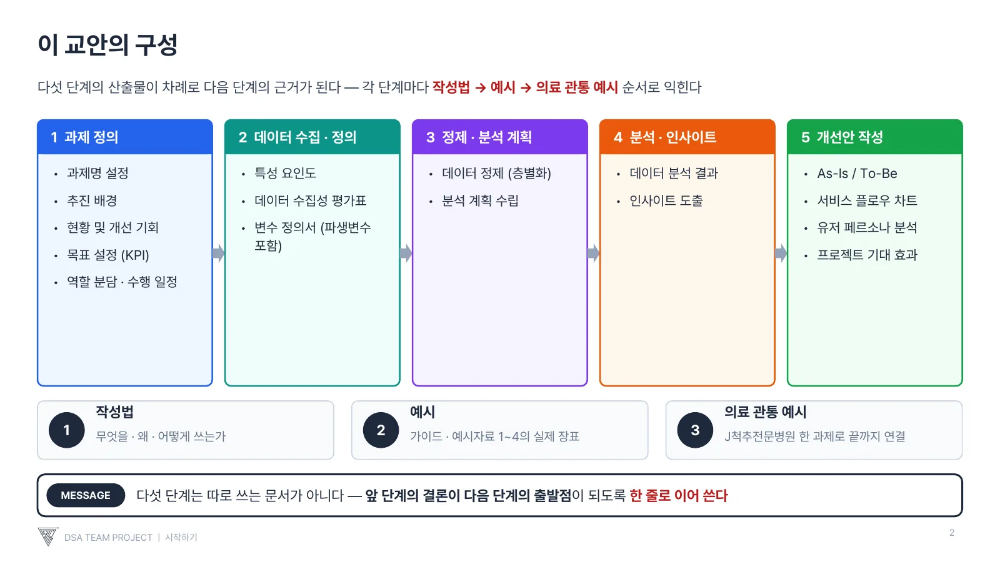
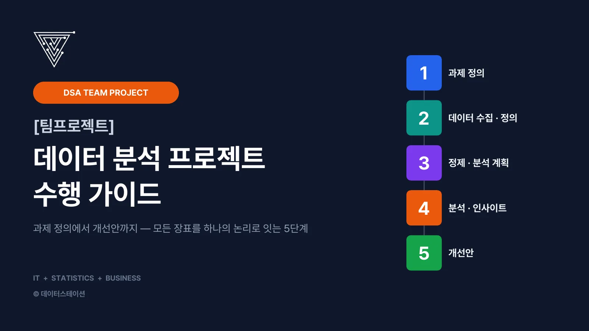
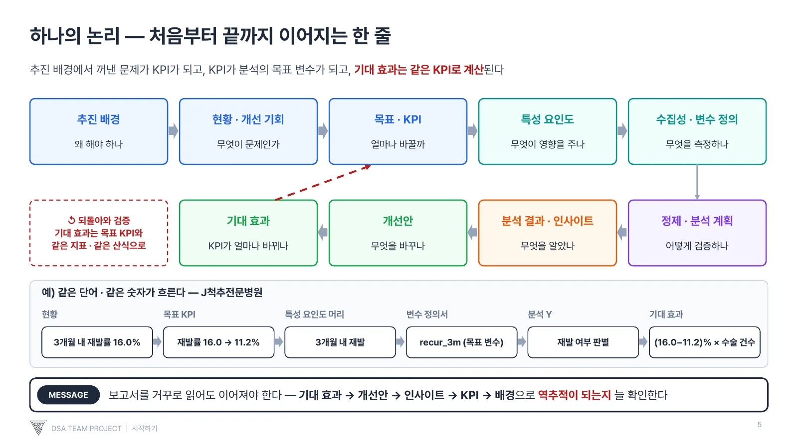
Consulting
분석 결과를 나열하는 보고서가 아니라 추진 배경, KPI, 데이터, 인사이트, 개선안이 한 줄의 논리로 이어지는 결과물을 만듭니다. 고객사 정보 보호를 위해 모든 사례는 기업명을 밝히지 않고 공개합니다.
Method
각 단계의 결론이 다음 단계의 출발점이 됩니다. 보고서를 거꾸로 읽어도 기대 효과 → 개선안 → 인사이트 → KPI → 추진 배경으로 이어져야 합니다.
컨설팅에서 쓰는 산출물 양식과 작성법을 116쪽 분량의 가이드로 정리했습니다. 기업 교육과 DSA 팀 프로젝트에서도 같은 가이드로 진행하기 때문에, 교육이 끝나면 바로 현업 프로젝트에 적용할 수 있습니다.



Case studies
실제 보고서의 일부를 공개합니다. 이미지를 누르면 크게 볼 수 있습니다.
영상·임상 데이터로 수술 후 재발 환자 예측 모형을 구축한 경험을 방법론에 맞춰 정리했습니다. 특성 요인도로 보유·미보유 데이터를 구분하고, 환자가 스스로 바꿀 수 있는 요인을 중심으로 퇴원 관리를 재설계했습니다.
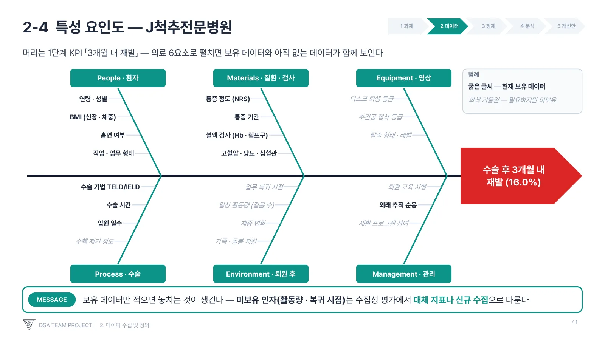
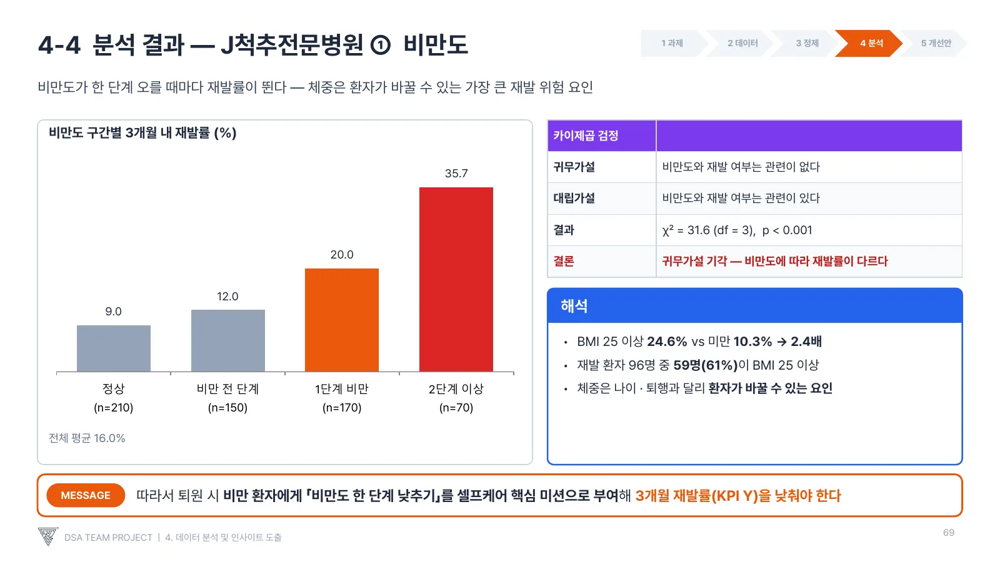
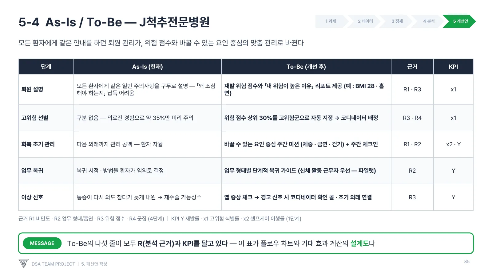
학교 플랫폼에 쌓인 내신·모의고사·출결·현장체험학습·활동 기록을 분석해 교사용 성적 대시보드와 학생용 학과 추천 서비스를 기획했습니다. 활동 기록 텍스트를 임베딩해 학과 간 네트워크를 만들고, 모델별 추천 품질과 연산 비용을 비교해 서비스에 맞는 방식을 골랐습니다.
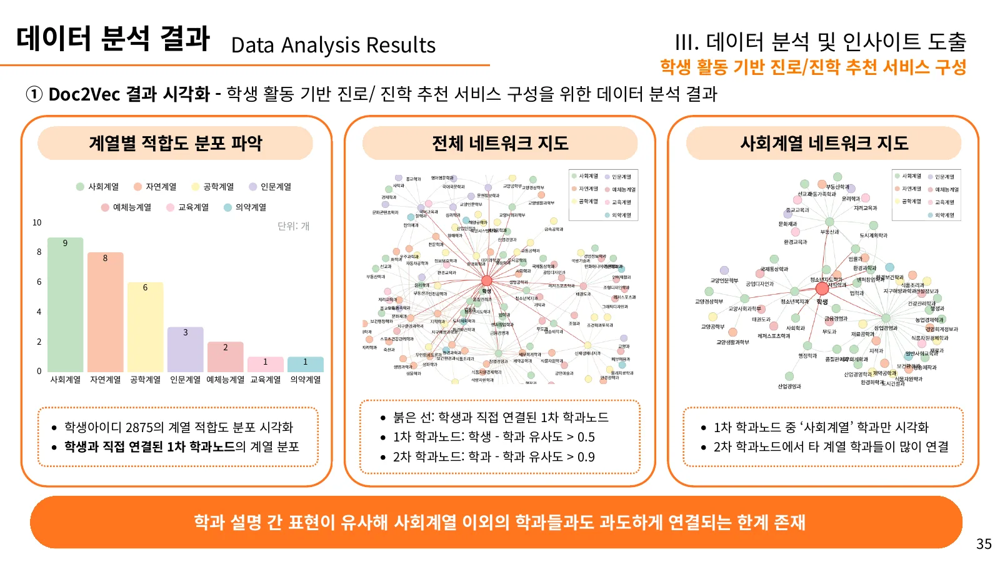
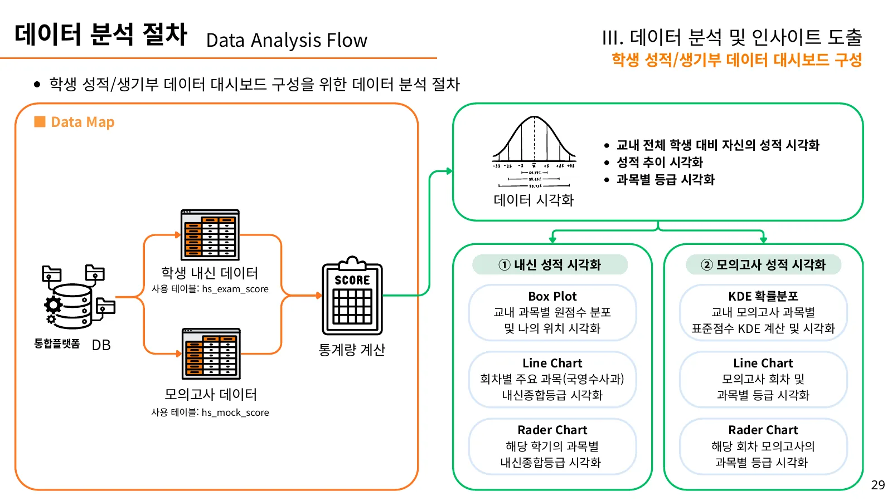
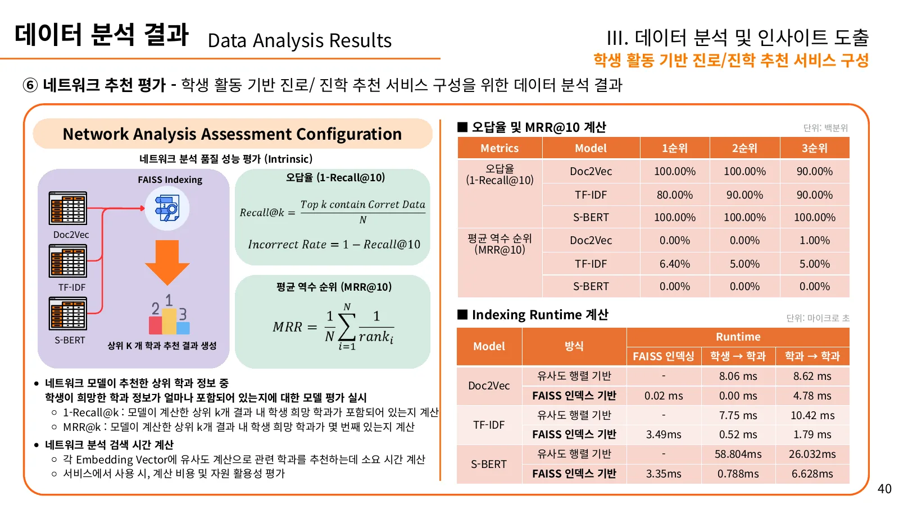
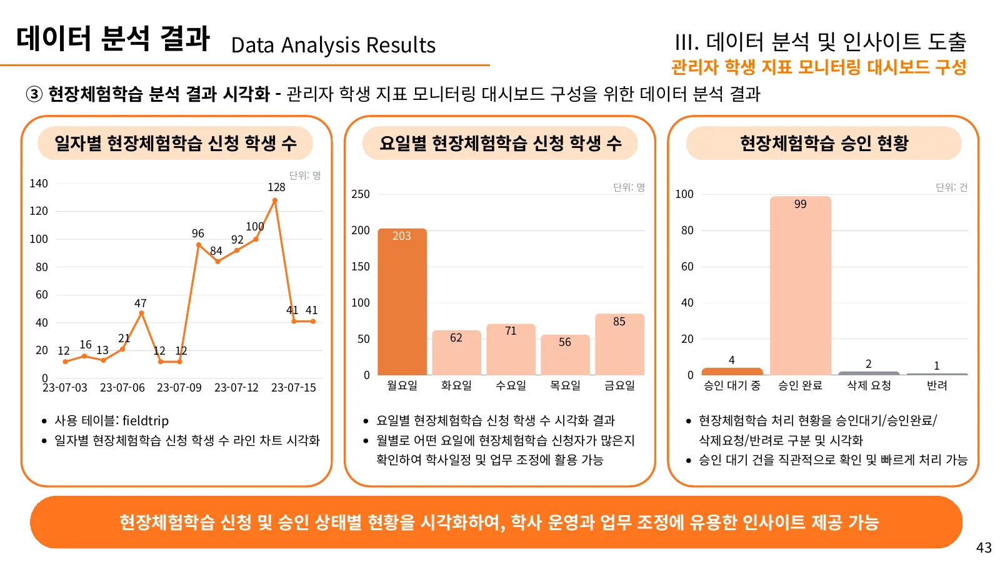
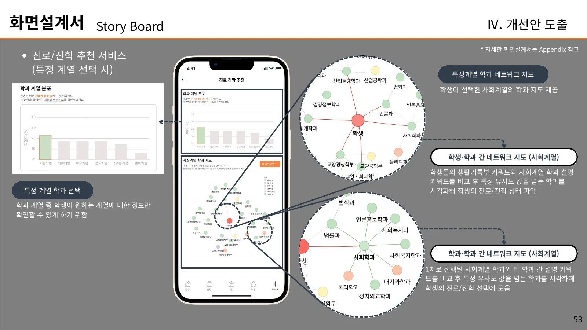
Across industries
학교 플랫폼 기업과 함께 보호자·인솔자·교사가 쓰는 등하교 도움 서비스의 메뉴 구조, 플로우차트, 화면 설계를 기획했습니다.
학생 성적·활동 데이터를 상담 맥락에 맞게 묶어 교사가 진로·진학 상담에 바로 쓰는 대시보드를 기획했습니다.
웹툰 CP사의 작품 기획을 위해 공개 웹툰·댓글 데이터를 수집하고, 흥행 요인과 회차별 반응을 보는 대시보드를 만들었습니다.
대시보드 예시 ↗반도체 부품 제조사의 반복 분석 업무를 JSL & Python 파이프라인으로 자동화했습니다.
석유화학 기업의 EVA 공정 데이터를 분석해 품질 영향 인자를 찾고 운전 조건 최적화를 지원했습니다.
14개 AI 에이전트가 나스닥 상위 200개 종목을 분석해 주 2회 리포트를 발행하는 시스템을 직접 구축·운영합니다.
리포트 보기 ↗Defense & Intelligence
군 교육기관의 학사·생활 데이터 시스템부터 전술 통신 품질 분석, 정보 분석 방법론까지. 현장 전술 훈련을 직접 이수한 분석가가 국방 도메인의 언어로 문제를 정의하고 데이터로 풉니다.
교육·훈련·생활이 함께 운영되는 사관학교 특성에 맞춰 면담·훈육·성적·체력 데이터를 하나의 생도 DB로 묶고, 음성 인식 기반 면담 일지 자동화와 생애주기 데이터 기반 임관 병과 추천까지 설계했습니다.
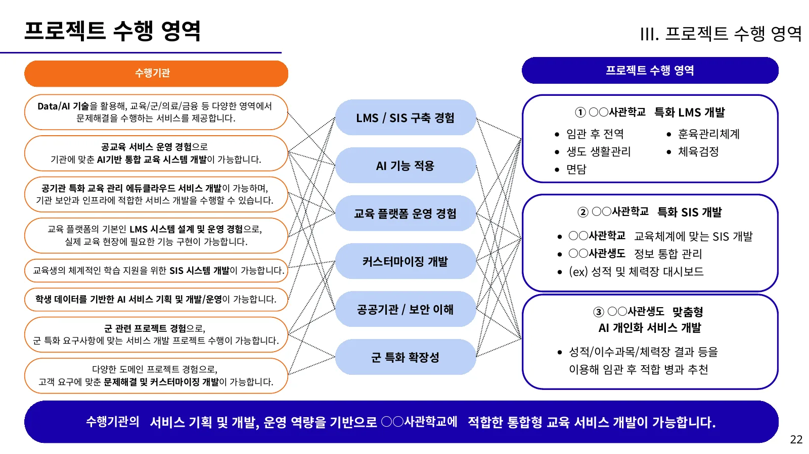
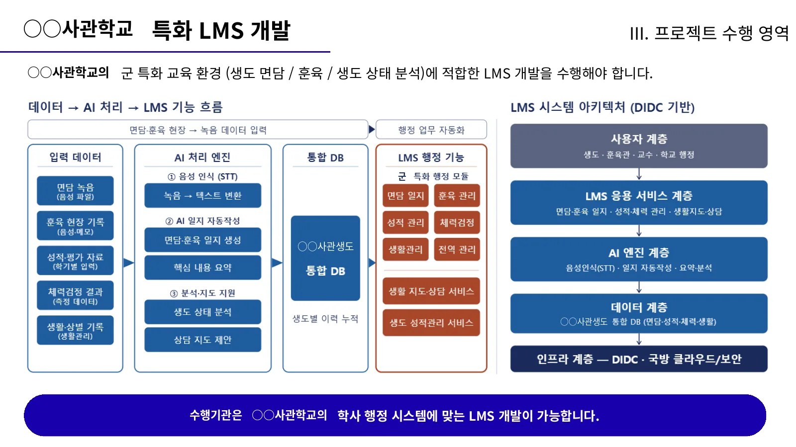
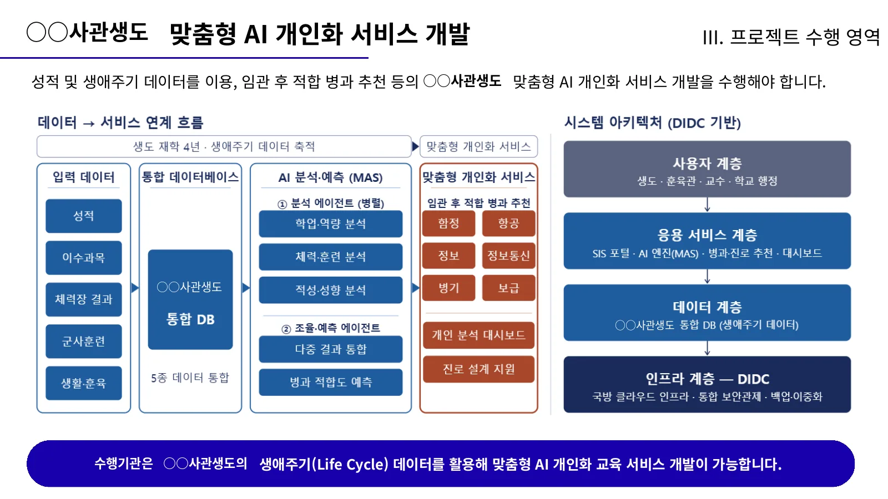
메시 네트워크 통신 장비의 신호 품질(RSSI·SNR)과 음성 명료도를 상황·거리·지형별로 측정하는 훈련을 설계하고, 결과를 모니터링 대시보드로 분석합니다.
작전·재난 현장의 유·무인 장비 데이터를 한 화면에서 공유하는 전술상황인식 대시보드를 기획했습니다.
보안 협약에 따라 세부 자료는 공개하지 않습니다.
은행·모바일 거래 데이터에서 비정상 자금 흐름과 거점을 식별하는 시나리오 기반 정보 분석 프로젝트를 설계했습니다.
Intelligence analysis
정보 수요자의 요구를 해체해 실무 목표로 만드는 문제 정의, 핵심 추정 검증, 정보 수목도 작성까지. 기업 문제해결 방법론과 같은 뿌리를 가진 정보 분석 절차를 교육하고 프로젝트에 적용합니다.
현실에서 발생한 사건을 관측·기록
데이터로 정제하고 구조화
핵심 추정 검증, 다관점 해석
결정권자가 행동할 수 있는 지식
정보작전의 원칙 · COPTACCS
국방·안보 관련 뉴스 기사를 수집하고 자연어 처리로 대군 신뢰도 관련 논조를 자동 분석하는 시스템 구축을 컨설팅했습니다.
지상전 현장작전요원 과정, 근접 전투(CQB) Lv3, 전술의학(TCCC·SOMS), 정밀·권총·카빈 사격술 과정을 이수해 현장의 언어로 소통합니다.
현황과 보유 데이터를 알려 주시면 과제 정의부터 함께 시작합니다.